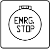
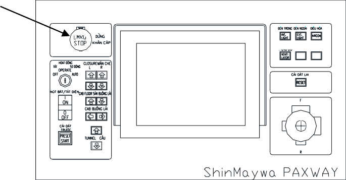
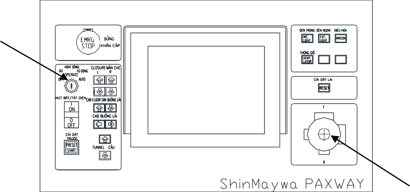
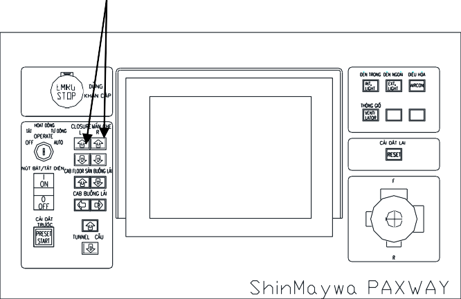
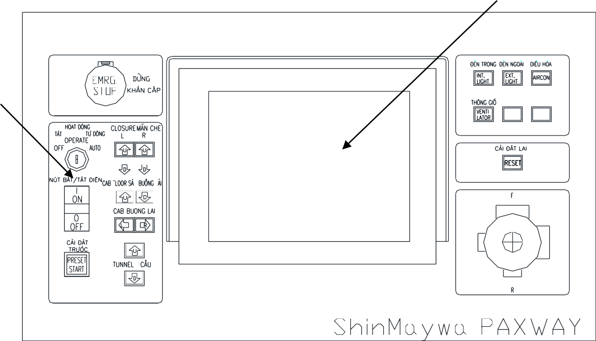

🛬 Thư viện PBB — Cầu dẫn hành kháchShinMaywa · Sân bay Long Thành · đào tạo tại DaiDung
🔒 nội bộ
🗺 Sơ đồ tư duy — toàn cảnh PBB trong 1 hình bấm nhánh để nhảy tới phần đó
📅 Kế hoạch đào tạo 5 ngày (08–12/06/2026) — GV: Yue Boon Kee Kelvin
Ngày 1
Đào tạo bộ phận CƠ KHÍ (trong nhà)Mechanical Component Training
Ngày 2
Đào tạo hệ thống ĐIỆN (trong nhà)Electrical System Training
Ngày 3
VẬN HÀNH an toàn: bàn điều khiển · thao tác · lỗi thường gặpSafety operation · control console · common faults
Ngày 4
Thực địa bãi tổ hợp: từng bộ phận PBB + BẢO TRÌ (ngoài trời/trong nhà)Parts at assembly yard · Maintenance
Ngày 5
Vận hành/Bảo trì tổng hợp + làm quen thiết bịOperation/Maintenance and familiarization
📍 DaiDung — Lô 38, KCN An Hạ, Bình Chánh, TP.HCM · 👥 tối đa 5 người/khách · 🏆 cấp Chứng nhận hoàn thành · Khóa học giảng bằng TIẾNG ANH, học viên cần nền tảng cơ/điện + kinh nghiệm bảo trì
🦺 An toàn — 6 quy định chung dịch từ mục General Items
1
Đọc kỹ tài liệu hướng dẫn trước khi vận hành. Thao tác sai có thể gây tai nạn chết người. Cất tài liệu ở nơi quy định để mọi người vận hành đều đọc được.
Cấm vận hành khi: sức khỏe kém, có rượu bia/thuốc ảnh hưởng thần kinh, đang dùng tai nghe hoặc điện thoại.
4
Kiểm tra cầu trước khi dùng. Phát hiện bất thường → báo đơn vị bảo trì ngay, đưa cầu về vị trí chờ không cản trở máy bay. Tự làm "chăm sóc hằng ngày" + "kiểm tra hằng ngày" và LƯU HỒ SƠ — đây là dữ liệu đầu vào cho kiểm tra định kỳ chuyên sâu (phải do đơn vị chuyên môn thực hiện).
5
Khi có tai nạn / cháy: dừng vận hành ngay; tai nạn người → sơ cứu trước; cháy → sơ tán hành khách khỏi cầu tới nơi an toàn. Quy định sẵn điểm sơ tán + vị trí bình chữa cháy, diễn tập định kỳ.
6
Thiên tai: động đất → dừng ngay, cường độ ≥4 (thang Nhật) phải kiểm tra bất thường; sét đánh → dừng + kiểm tra; bão → vận hành theo giới hạn TỐC ĐỘ GIÓ trong bảng thông số.
▶️ Trước khi vận hành Before Starting Operation
1
Ra vào cầu bằng cầu thang phục vụ (service stair) hoặc qua nhà ga — không leo trèo đường khác.
2
Kiểm tra an toàn xung quanh: nhìn trực tiếp + qua màn hình camera xác nhận KHÔNG còn người quanh cầu, dưới tunnel, quanh trụ dẫn động. Bật nguồn, xoay khóa sang "OPERATE" → xác nhận đèn xoay vàng sáng + còi cảnh báo kêu.
Kiểm tra an toàn quanh cầu: nhìn trực tiếp + màn hình camera (khu dưới tunnel, quanh trụ dẫn động)
Trong khi vận hành
1
Giữ tư thế đúng khi điều khiển.
2
Không làm 2 việc cùng lúc: không nâng/hạ rèm đầu cầu (closure) hoặc đóng/mở cửa cuốn cabin TRONG KHI cầu đang di chuyển.
3
Chống va chạm máy bay: đặc biệt chú ý landing frame tiến gần ĐỘNG CƠ máy bay khi cầu thang phục vụ lắp bên phải cầu.
Sau khi vận hành
1
Đưa cầu về đúng VỊ TRÍ CHỜ quy định.
2
Xoay khóa về "OFF", RÚT CHÌA cất nơi quy định rồi mới rời bàn điều khiển.
🚨 Cảnh báo & thiết bị an toàn
Thiết bị
Mô tả & yêu cầu
Biển cảnh báo (nameplates)
Dán cố định trên cầu, hướng dẫn hành khách + nhân viên. Mất/hỏng → liên hệ ShinMaywa thay NGAY.
Đèn xoay cảnh báo
2 đèn xoay CAM dưới gầm cầu — cảnh báo người gần cầu đang hoạt động.
Đèn chướng ngại
2 đèn trên nóc cabin — sáng liên tục, nhìn thấy từ xa.
Đèn pha
2 đèn dưới sàn cabin — chiếu sáng thân máy bay + khu vực bánh dẫn động.
Còi cảnh báo
1 còi điện dưới sàn cabin — báo cầu đang di chuyển.
⛔ NÚT DỪNG KHẨN CẤP [EMERGENCY STOP]: trên bàn điều khiển — phát hiện BẤT KỲ bất thường nào, bấm NGAY LẬP TỨC. Muốn phục hồi sau dừng khẩn: bấm lại chính nút đó.

Nút [EMERGENCY STOP] — màu đỏ, nhấn là cắt mọi chuyển động

Vị trí nút dừng khẩn cấp trên bàn điều khiển
🕹 Quy trình vận hành cơ bản — 13 bước dịch từ Basic Operating Procedures
1
Nếu nút [EMERGENCY STOP] ① đang bị nhấn → bấm lại để phục hồi trạng thái.
Bấm [AUTO DOCK] — cầu TỰ ĐỘNG về góc xoay cabin + cao độ sàn đã lưu cho loại máy bay đó. Màn hình hiện "COMPLETED" khi xong.
11
Dùng cần joystick ➃ tiến cầu về phía CỬA máy bay.
12
Đẩy joystick tới/lui = cầu tiến/lùi; tốc độ VÔ CẤP theo góc đẩy cần — đẩy càng nhiều chạy càng nhanh.
13
Đẩy joystick trái/phải KÈM tới/lui = cầu chạy chéo theo hướng đó; đẩy trái/phải KHÔNG kèm tới/lui = cầu XOAY tại chỗ.

Bàn điều khiển — vị trí các nút theo số khoanh tròn ①②⑤⑪⑭⑮

Màn hình đồ họa ⑫ — nút [PRESET] và cần joystick ➃
⚠ Các bước có số khoanh tròn (①②⑤⑫…) ứng với vị trí nút trên hình bàn điều khiển phía trên — bấm hình để phóng to; trọn bộ hình từng bước ở tab 📄 Tài liệu gốc → Basic Operating Procedures.
🧰 Bảo trì — chăm sóc & kiểm tra hằng ngày Daily Care + Daily Inspection
Vệ sinh định kỳ (6 hạng mục)
Hạng mục
Cách làm
Hệ thoát nước
Không để rác/tuyết/đá nghẹt máng + ống thoát nước dưới tunnel
Bàn + tủ điều khiển
Lau bằng KHĂN KHÔ
Tường, trần
Lau bằng nước rửa trung tính pha loãng
Sàn
Hút bụi; ướt thì lau; quá bẩn gọi đơn vị bảo trì
Kính cabin/tunnel/cửa
Nước lau kính thông thường
Kính hộp 2 lớp
Lau trong + ngoài; vết bẩn cứng dùng nước rửa trung tính rồi RỬA NƯỚC NGAY
Kiểm tra hằng ngày — điểm đáng chú ý nhất: LỐP
📏
Nhìn nhanh mỗi ngày: đo khoảng cách đất → TÂM lốp khi tunnel thu hết: lốp 46 inch chuẩn 510 mm · lốp 39 inch chuẩn 406 mm — thấp hơn là non hơi.
🔧
Đo đồng hồ áp suất ≥1 lần/tuần: lốp 46": 1.373–1.470 kPa (14,0–15,0 kg/cm²) · lốp 39": 1.138–1.755 kPa. Lốp đặc (solid) không áp dụng.
🖥
Kiểm màn hình đồ họa hoạt động bình thường + hình camera rõ.
Kiểm lốp hằng ngày: đo khoảng cách đất → tâm lốp (46": 510mm · 39": 406mm)
Tần suất kiểm tra định kỳ (theo giáo trình + 5 biểu mẫu kèm)
Chu kỳ
Ai làm
Biểu mẫu
Hằng ngày (trước khi dùng)
Người vận hành
Daily Inspection/Maintenance Report
Sau 1 tháng vận hành đầu
Đơn vị chuyên môn
One Month Report
Hằng quý
Đơn vị chuyên môn
Quarterly Report
6 tháng
Đơn vị chuyên môn
Biannual Report
Hằng năm
Đơn vị chuyên môn
Annual Report
5 biểu mẫu gốc đầy đủ nằm cuối tab 📄 Tài liệu gốc — in trực tiếp được.
💬 Hệ thông báo trên màn hình Message List
Màn hình đồ họa hiển thị thông báo theo nhóm — thông báo XANH DƯƠNG = giới hạn vận hành (cầu chạm ngưỡng hành trình, không phải hỏng hóc):
Thông báo (EN)
Nghĩa
APPROACHING LEFT/RIGHT SWING LIMIT
Sắp chạm giới hạn xoay trái/phải
SLOPE UP/DOWN LIMIT
Chạm giới hạn nâng/hạ độ dốc
APPROACHING TUNNEL EXTEND/RETRACT LIMIT
Sắp chạm giới hạn vươn/thu tunnel
TUNNEL EXTEND/RETRACT LIMIT
ĐÃ chạm giới hạn vươn/thu — không đi tiếp được
LEFT/RIGHT STEERING LIMIT
Giới hạn góc lái bánh trái/phải
TUNNEL VERTICAL UP/DOWN LIMIT
Giới hạn nâng/hạ chiều cao tunnel

Màn hình đồ họa hiển thị thông báo vận hành
Danh sách đầy đủ mọi mã (xanh/đỏ/vàng) + cách xử lý: tab 📄 Tài liệu gốc → mục "Message List" (có nút 🌐 dịch AI nguyên mục).
📄 Cần chi tiết hơn?
Tab "📄 Tài liệu gốc" chứa NGUYÊN VẸN giáo trình: 145 hình bàn điều khiển/bôi trơn/cấu tạo từng bộ phận, sơ đồ điện, danh sách mã lỗi đầy đủ, 5 biểu mẫu kiểm tra. Mục lục bên trái đã dịch tiếng Việt; dưới mỗi tiêu đề có nút 🌐 Dịch mục này (AI) — dịch nguyên mục, lưu lại trên máy.